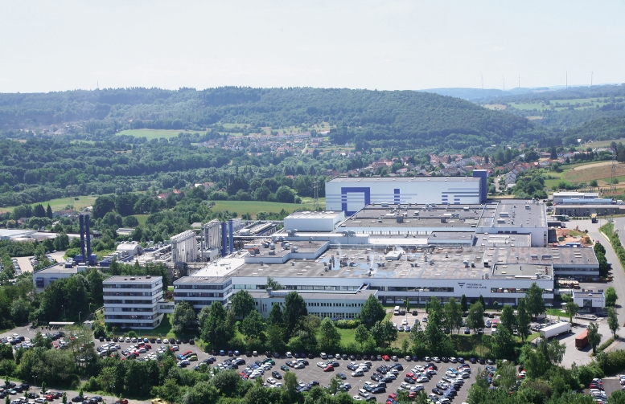

Fresenius Medical Care is the world's leading provider of products and services for people with kidney disease, of which around 3.4 million patients around the world regularly undergo dialysis treatment. The company cares for 342,488 dialysis patients worldwide in a network of 4,003 dialysis centres. Fresenius Medical Care is also the leading provider of dialysis products such as dialysis machines and dialysis filters. In the area of supply management, the company is expanding its range of additional medical services related to dialysis. Fresenius Medical Care employs more than 120,000 people.
During my working student employment at Fresenius Medical Care St.Wendel, I worked in the Global R&D / PEC.CATS Interface Technology department. Here I initialised a data system for test equipment management in a laboratory information management system, carried out laboratory testing, pre developed a method of examining the initial opening pressure of dialysis cassette check valves and assisted in the calibration of test equipment. Working in both the research and development lab and office spaces provided me with a unique array of opportunities. I experienced the medical device research and development field from the hands on perspective while also contributing to the organisation and planning which happens behind the scenes. I gained knowledge in the field of development and testing for single use dialysis treatment products.